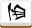
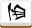
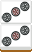
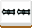
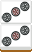
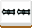

這裡將說明日本麻將中的役滿役，役滿亦即最大點數。
達成役滿的條件有兩種：
1.累計超過十三飜以上(累計役滿)
2.和出役滿牌型(純役滿)
但無論哪一種，其難度都很高，足以被稱為夢幻牌型。
役滿役只會與役滿役複合，而不會計算基本役。
役滿役
國士無雙
只使用所有種類的么九牌(一、九及字牌)各一枚，再加上任意一枚么九牌所組成的牌型。
另一種非四面子一雀頭的牌型，因為無法鳴牌，所以必定門前清。


 和
和

四暗刻
牌型中有四組暗刻或暗槓。因為不能鳴牌，所以必定門前清。


 自摸
自摸


大三元
牌型中有三種三元牌的刻子或槓子。

 和
和


小四喜
四種風牌中，其中三種風牌為刻子或槓子，另一種風牌為雀頭所組成的牌型。
 和

和



字一色
只使用字牌所組成的牌型。
和


綠一色
只使用二索、三索、四索、六索、八索及發等純綠色的牌所組成的牌型。大部分規則都不需要發，但有些規則會限制發一定要是刻子或是對子。

 和
和

清老頭
只使用老頭牌(一及九)所組成的牌型。
和


九蓮寶燈
牌型為1112345678999的形式，再加上任意一張同花色的數牌所組成的牌型。門前清限定。
此牌型仍為四面子一雀頭的形式。


 和
和

四槓子
由四個槓子所組成的牌型。
「四槓子」成立不會導致「四槓算了」而流局，同時其他人亦無法開出第五個槓。
 和
和
 





天和
親家限定。配牌後即宣告和牌。
地和
子家限定。第一巡摸牌即自摸，在此之前不能有人吃、碰、大明槓。
雙倍役滿役
日本麻將中存在雙倍役滿役，同時其難度比役滿役更高，幾乎難以達成。
部分規則不允許雙倍役滿，此時這些雙倍役滿以一般役滿計算。
國士無雙十三面
與國士無雙相同，但聽的牌為所有的么九牌(一、九及字牌)，即十三面聽。
和
四暗刻單騎
與四暗刻相同，但聽的牌為單騎聽。因為四個暗刻都有只缺雀頭，所以可以榮和。

 和
和
大四喜
以四種風牌的刻子或槓子所組成的牌型。
和

純正九蓮寶燈
與九蓮寶燈相同，但聽的牌為所有同花色的數牌，即九面聽。
和